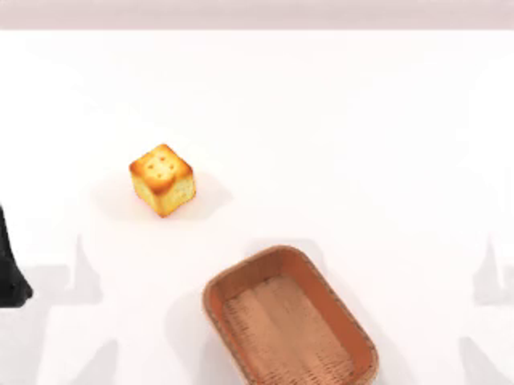
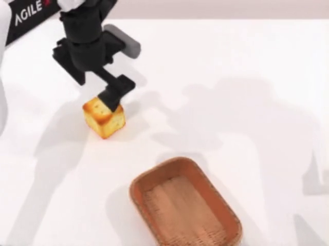
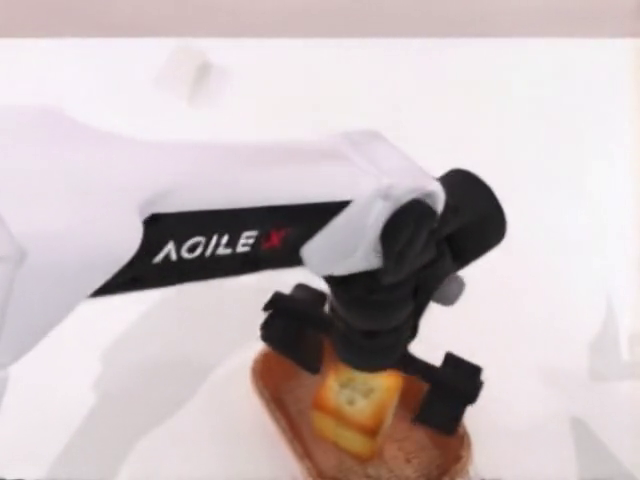
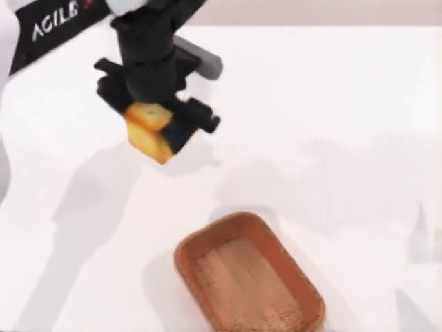
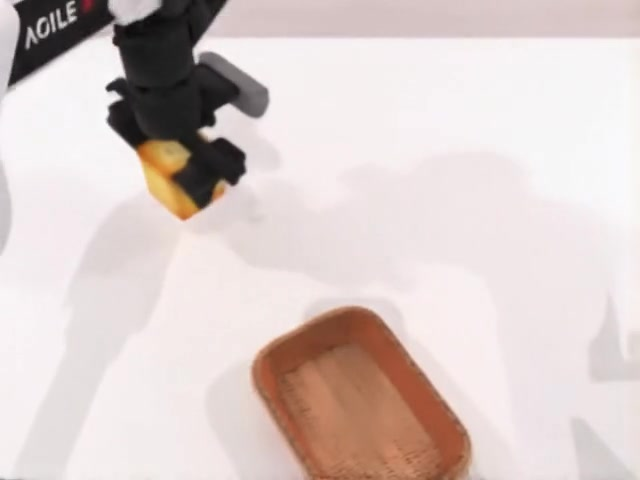

Action-conditioned world generation
WorldArena
Track 1 FD
把双臂末端执行器轨迹作为 clean condition，让 Cosmos3-Nano 预测视觉未来；再用短窗口自回归，把局部动力学扩展为 exact-T 完整 episode。
→ future video




From local SFT to long-horizon rollout
训练和推理共享
同一个接口
训练只学习 48 个动作步对应的局部视觉动力学。AR 工具改变的是时间切片和条件帧来源，而不是模型内部结构。
窗口内：GT action 驱动未来。窗口间：上一窗口最后一帧传递 appearance memory。
fd_robotwin_nano.py:178-250 · fd_robotwin_repro.toml:18-59 · run_fd_ar.py:160-249
Action representation
16-D 双臂 EEF
先重新锚定
每个窗口都以自己的起始状态为原点：平移做差，旋转乘以起始姿态逆；随后按官方 RoboTwin quantile 统计映射到 [-1,1]，裁剪并 zero-pad 到 64 维。
相对化不是模型层；模型的 action2llm 实际接收 64-D 输入。FD 路径中的 quaternion 按 XYZW 交给 SciPy Rotation。
robotwin_lerobot_dataset.py:97-127,317-341 · action_processing.py:163-181,205-231
Full multimodal topology
FD 模型结构：动作是 clean condition，未来视觉是 flow target
Instruction、首帧 latent、未来 noisy latent 和 action token 被 pack 到一个多模态序列中。36 层 MoT 对 generation query 开放全局 attention。
cosmos3_vfm_network.py:136-157,673-779 · omni_mot_model.py:1040-1097 · Qwen3-VL-8B-Instruct.json:15-21
Inside the backbone
不是串联模块，
而是联合注意力场
Understanding/text query 保持 causal；generation query 可以读取全部文本、视觉和动作 token。每层拥有理解/生成两套 QKV 路径，视觉生成再进入独立的 dense generation MLP。
训练不是直接回归 RGB：在 VAE latent 中构造 rectified-flow 路径，并只在未来视觉 token 上监督速度。
Action token 不承担 action loss；它通过 joint attention 改变 future latent 的速度场。
unified_mot.py:450-530,595-721,1009-1174 · attention.py:88-145 · rectified_flow.py:176-215
Training computation graph
条件全部可见，
loss 只打在未来
首帧 latent 与全部 action token 保持 clean。仅未来 12 个 latent time slices 被注入噪声并承担 flow-matching loss；文本提供任务和视角语义。
更新 generation stack 和 action adapter；VAE 负责压缩/解码，但不把 RGB 空间直接作为优化目标。
fd_robotwin_nano.py:47-250 · omni_mot_model.py:972-1007 · flow_matching.py:18-35,61-90
Autoregressive state machine
64-action 短窗口，闭区间拼接成 exact-T
窗口 k 覆盖原生索引 [kW, kW+W]。非首窗口丢弃重复的 frame 0；最后一个窗口按 validₖ 截断。模型常驻单进程，episode 锁每窗口 heartbeat。
run_fd_ar.py:2-43,160-249,257-383 · run_fd_ar_multi.sh:4-28,50-95
Observed rollout
动作可跟随，
但误差会累积
真实 fixed_scene_task / episode 471 的 FD 输出显示，机器人姿态和物体交互可以随 action 演化；长时滚动的主要风险来自 appearance drift、接触瞬间和遮挡后的几何恢复。
评估要同时看 trajectory accuracy 与视频真实性，不能只看单帧清晰度。
run_fd_ar.py:257-383 · WorldArena/trajectory_accuracy.py:181-220 · VLM_judge.py:47-150

WorldArena submission handoff
从模型输出到
可提交 episode
AR 输出按 episode 完整性检查、重命名并打包；Track 1 的最终对象不是 latent 或窗口，而是一集一个、长度严格对应 trajectory 的 mp4。
WA/assets/TRACK1_HF_SUBMISSION_GUIDELINE_CN.md:24-48,64-195 · WA/tools/pack_track1_submission.py:180-240